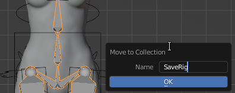
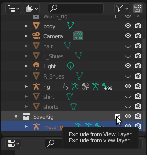
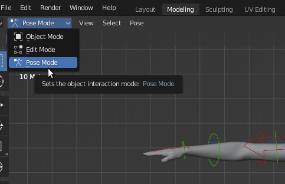
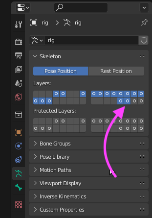
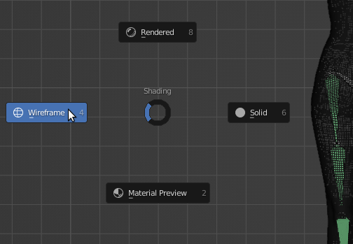
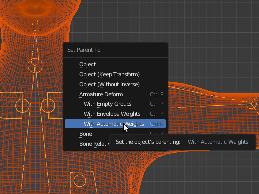

Part 2 - Rigging a Figure in Blender
Prepping for Parenting
Declutter / View New Bones
Hide the Original MetaRig
The scene is getting pretty busy. It’s real easy to click on things you don’t sort-of want to edit or do anything with, and one of those things is that original metarig. It’s time to hide it.
In Object mode, select the metarig, press [M] and create a New Collection. I’ll name mine ‘SaveRig’:

In the Outliner, untick this box:

Your original metarig should no longer be visible.
Hiding That New Rig for Now
In the Outliner you will notice that what surrounds your figure has a name: ‘rig’. Selecting it in Outliner will select it in the viewport. Our new rig isn’t doing anything for us except to get in the way - we’ll hide it. With that rig selected, go into Pose mode:

The rig is now multi-coloured. Just to keep things easy, we will hide it. Press [A] to select all parts of the rig -all parts will go to one colour - and press [H] to hide them.
Introducing New Bones
We need to see the newly generated bone set. Go back to the Data Properties panel. What we’re after is the Layers section. The visible layers are light-blue (on my system - yours might be different) and the non-visible ones grey. Holding down the [Shift] key - the [Shift] key is important, here! - click on the indicated layer:

Note: if you forgot to hold down the [Shift] key, you will deselect the other layers. Press [Ctrl] [Z] to undo, and try again.
Press [Z] and select ‘Wireframe’:

The new bones - called ‘deformation bones’ - are now clearly visible. According to Pixxo3D, these bones are actually weighted to the geometry of your figure.
Parenting our Rig
Get Ready to Parent
To parent, selecting in the right sequence is important. Also, this is a multi-select action.

Go back to object mode.
Still in wireframe mode, select the mesh of our figure FIRST
Holding down the [Shift] key, select the deformation bones SECOND
Press [Ctrl] [P] ([Cmd] [P] on the Mac)
Select ‘With Automatic Weights’
The script should run - nothing will seem to happen. If the script fails, a notification will appear briefly in the status bar. The error can be reviewed in the console.
Hiding the Deformation Bones
Select the deformation bone set only
Go into Pose Mode
In the Data Properties / Layers section, (with [Skift] key held down) deselect that previously added layer - the deformation bones are no longer visible.
While still in Pose Mode, press [Alt] [H] to unhide your rig
Press [Z] and select ‘Solid’
After Parenting the Rig
In the case of our girl in shorts, parenting hair and clothing would be done with those same deformation bones we just hid. More importantly, before we endeavour to clothe our figure, checking our rigging by deforming our figure - moving bits about - is going to be hours and hours of:
delete the current rig
go back several versions (before Generate Rig)
adjust bone positions
Generate Rig, and all the steps above
check deformations
rinse and repeat
Final Thoughts
I can strongly recommend Pixxo3D’s channel on YouTube: he’s got quite a few amazing videos on a number of Blender-related topics.
Hope this document proves useful to someone.